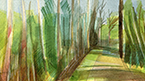

Autism is all grown up now, and it isn't always pretty. Autistic adults
face a multitude of significant, endemic challenges.

A Partial List
- Work/Life: Landing and keeping a job is often an uphill battle. Many find themselves unemployed or in roles that don't tap their potential. Hiring processes and workplace environments frequently clash with autistic needs, creating frustrating barriers.
- Health care hurdles: Medical settings can be overwhelming sensory minefields. Many doctors struggle to connect with autistic patients, leading to misunderstandings and subpar care. Getting diagnosed as an adult? It's a long, winding road that can delay access to crucial support.
- Social challenges: Building and maintaining relationships is like navigating a maze without a map. Isolation is common, especially during big life transitions like starting a career or living independently. The "services cliff" at high school graduation is a prime example.
- Mental health struggles: Anxiety, depression, and thoughts of suicide are all too common. Many mental health services miss the mark, leaving autistic adults feeling misunderstood and unsupported.
- Learning and working: Some face learning difficulties that ripple into job prospects. Sensory sensitivities, anxiety, and challenges with independent work can create roadblocks to employment.
These issues often snowball, making life tougher across the board.
Solutions
- Autism-friendly social and work spaces
- Healthcare providers to really get it
- Stronger peer-support social support networks
- Mental and physical health approaches that actually click with autistic minds and bodies
- Work and education tailored to play to autistic strengths

Dr. Bones McCoy trying to save Klingon General Gorkon in The Undiscovered Country
Fans have found it pretty ridiculous that McCoy would know nothing about Klingon anatomy and have no way to find out. We think it's pretty ridiculous how little doctors know about autism, all the different ways it affects people's lives, and how to properly talk to and care for autistic people.
Many autistic adults in Oregon are invisible, marginalized, and struggling.
We can fix this.

Unmet needs
Only a fraction of autistic adults in Oregon receive social services. Not all of us need them but a huge gap remains. Access to services and information remains a huge problem.
Mission
The mission of Autism All Grown Up (AAGU) is to empower autistic adults in Oregon by serving as a nexus that provides accessible information, resources, and tailored to our unique needs. By bridging gaps in the existing infrastructure, we connect and interconnect the adult autistic community and our supporters, facilitate information exchange, and promote collaboration. This ensures that autistic individuals can access the support and opportunities we need to thrive, enhancing our well-being and independence throughout the state.
What We Do
Working from within the community, we listen to autistic voices to identify and document systemic challenges. We then perform root cause analysis, create or propose solutions, and publish the results for the public.
- Build community through outreach and autism-friendly physical spaces.
- Identify unmet needs in the community.
- Find ways to meet those needs.
- Spread the information.

Autism is lifelong. Support and research haven't been. We are just starting
to learn what successful adulthood looks like for autistic people.

Lost Generations
So little research has acknowledged the lives of adults with autism that we are just starting to learn what successful adult development looks like. Until recently, almost all attention to autism has been focused on children, early intervention, and treatment. Late-identified and never-identified autistic adults face unique challenges with respect to aging, and most of these "lost generations" have not yet even been identified, accounted for, or documented.
Invisible Majority
Autistic adults represent the vast majority of autistic people but have a tiny fraction of the acknowledgment and support. Because autistic is how we are born, there are, in fact, way more autistic adults than children. Many experts believe that massive numbers of adults who have been wondering their entire lives why they have felt out of place and faced so many challenges in life despite their abilities are probably undiagnosed autistic adults. Sadly, experts also think many of these people have ended up on the dark sidelines of society: the ranks of the unemployed, homeless, in the penal system, in the foster system, struggling with addiction, or lost to suicide.
Although the number of "Quality of Life" studies has increased in recent years, it still receives a tiny amount of actual funding dollars compared to Biology-oriented studies looking for causes, cures, and treatments. The data for this chart comes from the autism research database provided by the Interagency Autism Coordinating Committee (IACC), a United States federal advisory panel within the Department of Health and Human Services (HHS). It coordinates all efforts within HHS concerning autism spectrum disorder (ASD). We bundled the IACC objectives into a smaller number of categories. We put any program with an objective related to "Biology", "Causes", "Genetic or Environmental Effects", or "Risk factors" into "Biology". We put any program with an objective related to "Lifespan", "Lifespan issues", "Services", or "Services and Supports" into "Quality of Life".
The autistic community has the talent and ability to create solutions NOW.
"Actually Autistic" adults are not what you see on TV.

Savants are rare. Capable autistic people are not.
Advocacy is working to change our general view of neurodiversity and how we handle it in society, including how to adjust research priorities for autism. This work moves slowly. In the meantime, millions of autistic adults are trying to redefine and reclaim their identities and hopefully overcome some of their past struggles.
We want to help our autistic community NOW and have found ways to do so without waiting for the slow machinery of political, scientific, industrial, and cultural change. Our key insight is that the adult autistic community is already primed with untapped resources in the form of talented, creative, and caring people who have the exact skills needed.
Past missteps in identifying and characterizing autism have led to numerous misunderstandings and myths. Counter to these, the vast majority of autistic people:
- Are cognitively or intellectually capable
- Are socially motivated and want relationships and community
- Are in much greater need of acceptance and understanding than accommodation
- Are in the best position to support other autistic people, including those who may be profoundly impacted by autism, associated trauma, or conditions endemic to autistic genotypes.
By us and for us
The growth in leadership by autistic voices in the public arena and academia has firmly established that autistics and other neurodivergent people comprise a distinct group rather than merely a broken form of normal.
While we owe a huge debt to the tireless advocacy that parents and other allies have performed over the generations, ultimately, no one understands autistic people like other autistic people. Fact.
AAGU was started by autistic people and we thoroughly enjoy working together. By sourcing talent from within the autistic community, we can take one small step towards creating a welcoming environment for other autistic people.

Working from within, we can make an immediate impact by activating and
empowering the autistic community in Oregon to focus on attainable objectives.

Attainable Objectives
AAGU believes it can help nurture organic changes by facilitating small steps to empower autistic adults to live rich, independent lives by facilitating innovation and supporting existing programs through networking, collaboration, and education.
Community
- Build partnerships with local organizations by networking and creating alliances.
- Establish The Uncommons: Physical meeting and coworking spaces where autistic adults can work and socialize unmasked.
Communication
- Improve communication channels to enhance service delivery
- Facilitate connections and collaboration within the adult autistic community.
Information
- Identify the unmet needs of autistic adults and report on the causes.
- Provide accurate, accessible content for and about autism and the adult autistic community.
- Create comprehensive and accessible guides on navigating healthcare, employment, and social services.
- Improve online resources for autistic adults and provide consulting services to others to do the same.
- Participate in data analysis and research to inform policy and advocacy efforts.
- Unlike most autism-related websites, we will allocate a significant portion of our budget to continuously reviewing and updating this information as it evolves.